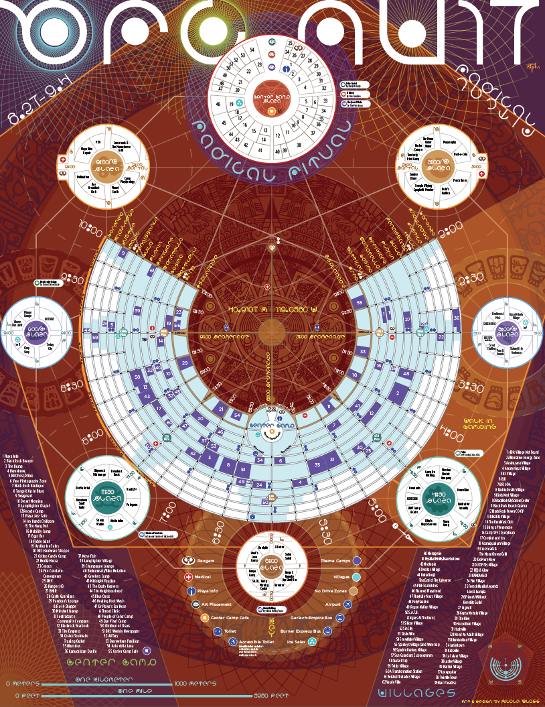

Burning Man 2017 / Black Rock City Map An exploration of radical art and creativity.

THEME
Metaphysical ideas of religion, there is immediate experience. It is from this primal world that living faith arises. In 2017, we will invite participants to create interactive rites, ritual processions, elaborate images, shrines, icons, temples, and visions.The experience of spirit is identified with breath. The word inspiration has a pedigree that extends back to the middle of 16th century, deriving from the even more ancient Latin word inspirare, which means to breath into, to draw air into the lungs. In this sense, we encounter spirit constantly in daily life in the form of sighs and sobs, snorts and gasps, any involuntary intake or expiration of breath. We speak of high spirits, low sprits, and spirited actions. We also know that spirit is highly contagious — it can spread with lightning speed through great assemblies — and it is identified with states of exaltation, as when we feel we rise above ourselves. Very often an excess of this feeling can produce an upthrusting of the arms.
Beyond the dogmas, creeds, and metaphysical ideas of religion, there is immediate experience. It is from this primal world that living faith arises. In 2017, we will invite participants to create interactive rites, ritual processions, elaborate images, shrines, icons, temples, and visions. Our theme will occupy the ambiguous ground that lies between reverence and ridicule, faith and belief, the absurd and the stunningly sublime. The human urge to make events, objects, actions, and personalities sacred is protean. It can fix on and inhabit anyone or anything. This year our art theme will release this spirit in the Black Rock Desert.